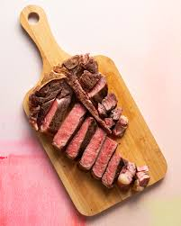

Grilled Steak Recipe

Description
Steak is an easy protein to cook. One of the best parts of cooking steak is that there a multiple ways to do it
and different ways to try it. On top of that it tastes great.
Steak can be served with many different sides. Usually a vegetable is included. My favorite sides are potatos and asparagus.
Steak can also be used in other meals like tacos or sandwiches.
Ingredients
- Preffered cut of steak
- Seasonings
Directions
- Turn grill on high
- Place steak on plate and use preffered seasonings on each side of steak
- Once grill is to at least 500 Farenheight, put steak on grill
- Close lid of grill and grill one side for 2-2.5 minutes
- Flip, close lid, and cook other side for 1.5-2 minutes
- Take off grill and let sit for 2-3 minutes
Enjoy